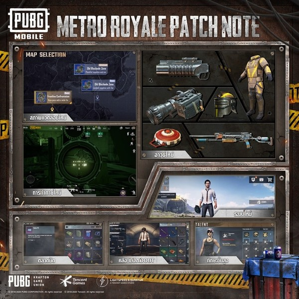

PUBG Mobile เป็นเกมที่เลือกเล่นได้ว่าจะไปคนเดียว ไปเป็นคู่ หรือไปเป็นทีมสี่คน ซึ่งการเล่นแต่ละแบบก็จะมีเทคนิคและการเตรียมตัวที่ต่างกันออกไป แน่นอนว่าสำหรับผู้เล่นหลายคนที่ชอบบวกชอบลุย ก็มักจะไปคนเดียวหรือไปกับเพื่อนที่มีนิสัยเดียวกัน มาดูกันดีกว่าว่าเทคนิคที่ช่วยให้เอาตัวรอดได้นานขึ้นนั้นมีอะไรบ้าง
อย่างที่เคยพูดถึงไปในบทความก่อน ก่อนที่เราจะไปลุยในแบบ Solo หรือโหมดไหนๆ อุปกรณ์ของเราต้องพร้อมก่อน โทรศัพท์ชาร์จให้เรียบร้อย โทรเคลียร์กับที่ทำงานและเพื่อนฝูงให้เรียบร้อยว่าเรามีภารกิจต้องทำ อย่าโทรรบกวน(เพราะจะไปโดดร่ม) และถ้าจะให้ดีก็ต้องหาหูฟังมาใช้งานด้วย เพราะการฟังเสียงในเกมเพื่อระบุตำแหน่งของศัตรูนั้นสำคัญมากๆ การได้ยินทุกสิ่ง เห็นทุกอย่างจึงเป็นสิ่งจำเป็นที่สุด